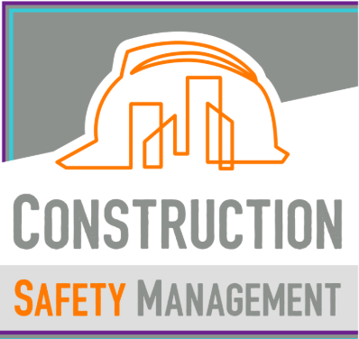

FireMasters
FireMasters is a company specializing in the sale and installation of
fireplaces, braais, flues, and related heating solutions for residential
and commercial clients.
I built the full website using WordPress and Elementor, focusing on
clear product presentation, responsiveness, and an easy-to-navigate
structure for customers.
Tech used: WordPress, Elementor, HTML, CSS
Visit Website →

Safety Management
Safety Management provides safety inspections, compliance checks,
and protocol implementation for development and construction sites
to ensure workers and projects meet legal safety requirements.
I designed and built the website to clearly explain services,
establish trust, and present a professional presence for clients
in the construction industry.
I used WordPress and the Elementor HTML Block to hard code the website in HTML and CSS.
Tech used: WordPress, Elementor, HTML, CSS
Visit Website →
Living Church of God - South Africa Website
Living Youth Programs is a Program from Living Church of God designed for the youth to help strenghten and build faith and friendship,
all while having fun in a Godly manner that still let's one light shine!
I built the full website and the Registration web-app, using VS Code. The frontend tech-stack is
HTML, CSS and Javascript, focusing on
clear product presentation, responsiveness, and an easy-to-navigate
structure for site visitors. The backend tech stack is Python in the FastAPI framework. The database was first SQLite for demo purposes,
then upgraded to PostgreSQL
Tech used: HTML, CSS, Javascript, Python, FastApi, PostgreSQL
Visit Website →